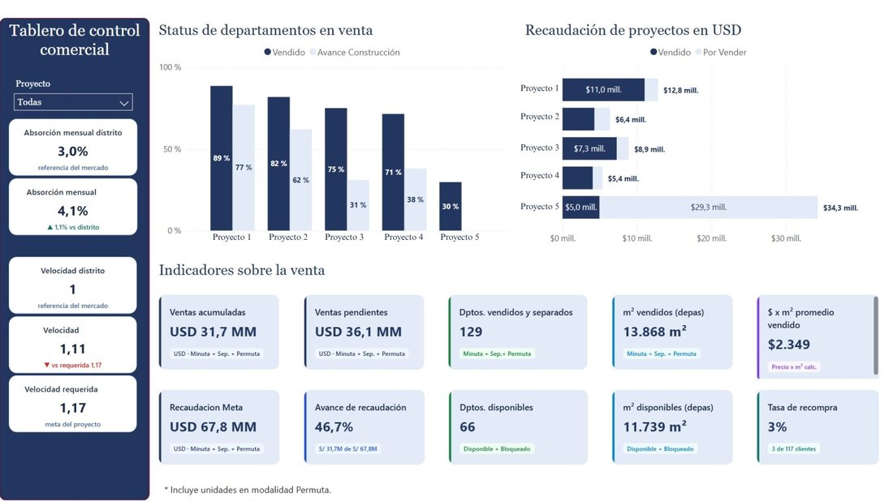

Selected Work
Projects.
Real dashboards, pipelines and tools built for commercial teams making day-to-day decisions.

Power BI · Data Automation
Automated Commercial Performance Dashboard
An automated pipeline pulling from the CRM data cube, cleaned and transformed with SQL in pgAdmin, feeding a Power BI dashboard that tracks pre-sales, sales velocity and unit separations by channel, plus a customer profile view Marketing uses for ad targeting — refreshing itself every day.
View case study →
Market Intelligence
Market Intelligence & Competitor Analysis
An automated pipeline scraping three real-estate platforms into a monthly-updated dataset, connected to Power BI to track competitor projects, pricing, price per m², stock and market positioning.
View case study →